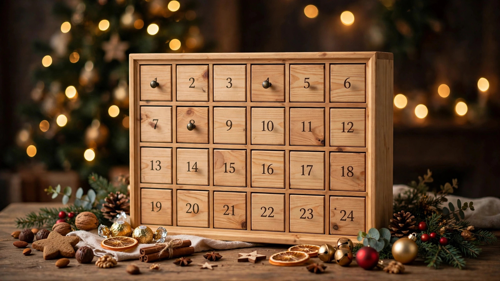

Christmas Countdown Ideas 2026: Advent Calendar Alternatives

Counting down to Christmas is half the fun of December. While classic advent calendars are lovely, these creative Christmas countdown ideas for 2026 offer fresh ways to build anticipation — for kids, couples, families and even coworkers. Pick one and make every December day a small celebration.
Countdowns for Kids
Activity envelopes: 24 envelopes each holding a fun task — bake cookies, drive to see lights, write Santa a letter. Book countdown: wrap 24 picture books, one to open nightly. Kindness countdown: each day holds one good deed to do together.
Countdowns for Couples
Date-night jar: 12 or 24 mini date ideas to draw through December. Memory lane: each day reveals a photo and memory from your year together. Tasting countdown: specialty chocolates, cheeses or mini wines for grown-up anticipation.
Make it reusable: invest once in a wooden or fabric countdown calendar with pockets. Refill it every year with fresh notes and treats — it becomes a beloved family heirloom within three Decembers.
Countdowns for Families
Gratitude chain: add a paper link daily naming something you are thankful for — read them all Christmas morning. Movie countdown: 24 films, one per night. Ornament-a-day: hang one special ornament daily until the tree is complete on Christmas Eve.
DIY Advent Calendar Builds
Muffin tins, hanging envelopes on twine, small drawstring bags on a branch, or a magnetic board with numbered tins — all make reusable calendars you will use for years. Fill with notes, treats or tiny gifts matched to your people.
Do not overcomplicate the daily reveals. Some of the most loved countdown moments are the simplest: a joke, a compliment, or ten minutes of undivided attention. Consistency beats extravagance.
Shop: Countdown & Advent
Calendars, fillers and DIY countdown supplies.

Prices shown at the time of publishing and can change.
Photograph each day's reveal and compile them into a December highlights album. By Christmas morning you will have a day-by-day story of the whole magical month.
Frequently Asked Questions
When should you start a Christmas countdown?
December 1st is traditional for 24-day countdowns. Twelve-day versions start December 13th.
What can I use instead of an advent calendar?
Activity envelopes, book wrappings, gratitude chains, date-night jars and ornament-a-day trees all work beautifully.
What do you put in a DIY advent calendar?
Mix treats, tiny gifts, activity notes, jokes and kind deeds — variety keeps every day exciting.
Are advent calendars only for kids?
Not at all — beauty, coffee, cheese, wine and puzzle calendars make December delightful for adults too.
Conclusion
The countdown is where Christmas memories quietly accumulate. Choose the ritual that fits your household, start December 1st, and savor the sweetest 24 days of the year.